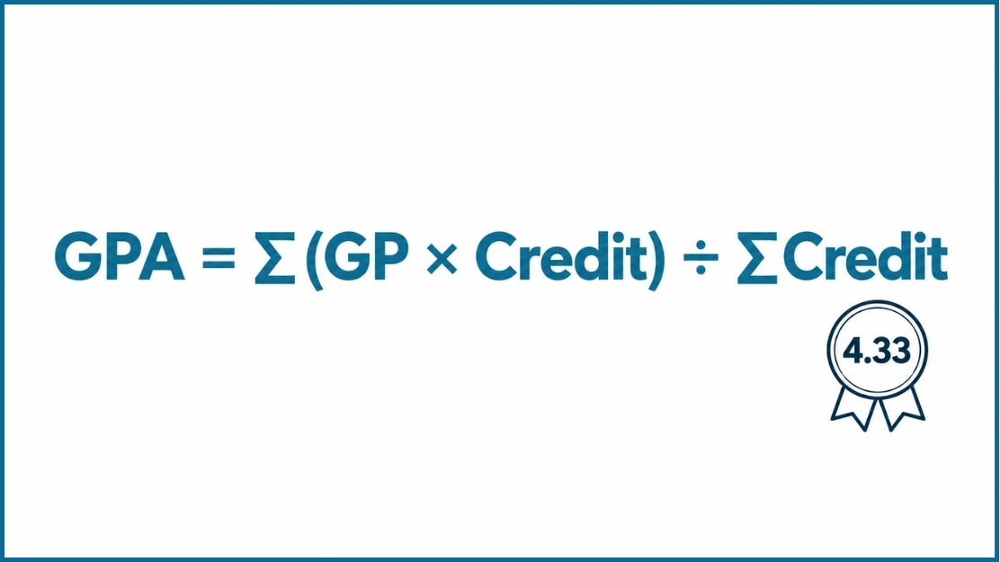

CGPA Calculator Canada for Course Grades and Credit Hours
CGPA Calculator
Target CGPA
SGPA → CGPA
What Is a CGPA Calculator for Canada?
This CGPA calculator for Canada converts letter grades to 4.33 grade points, weights each course by its credits, and returns your semester GPA and cumulative GPA (CGPA). Add your courses in the calculator above and the results update as you type. It works as a 4.33 grade calculator for SFU and Toronto Metropolitan University (TMU), and as a UBC CGPA calculator when you enter letter grades or convert percentages with the UBC table further down.
Canada has no national GPA scale. The same A+ is worth 4.33 at some schools, 4.30 at others and 4.00 at others, so check your school's scale in the comparison below before you rely on a result.
What Is GPA and CGPA in Canada?
GPA, or grade point average, is the credit-weighted average of the grade points you earn. Each letter grade maps to a grade point value, that value is multiplied by the course credits, and the total is divided by your total credits. Because of the weighting, a 6-credit course moves your GPA twice as much as a 3-credit course.
Most Canadian transcripts report a term GPA (also called sessional GPA) and a cumulative GPA. CGPA is the short form of cumulative GPA. Some schools, UBC among them, grade by percentage, so a GPA often appears only when an application, scholarship or credential evaluator asks for one. Read What Is CGPA? for the full definition.
Why Is GPA Important?
Honours entry, Dean's List standing, scholarship renewals, exchange placements, co-op and internship screening, and graduate admission all set a minimum average, and the cut-off is usually written on the program or award page. Some employers ask new graduates for it as well.
Calculate it before a deadline, not after. If an award needs 3.67 and you sit at 3.52, the Target CGPA planner above shows the GPA you need on your remaining credits.
The Canadian 4.33 GPA Scale
On the 4.33 scale an A+ is worth 4.33, an A is worth 4.00, and each step down loses about 0.33. This is the scale in the calculator's grade menu. The table also shows the percentage band behind each letter at UBC and TMU, because the bands differ by school.
| Letter Grade | Grade Point | UBC Percentage | TMU Percentage |
|---|---|---|---|
| A+ | 4.33 | 90–100% | 90–100% |
| A | 4.00 | 85–89% | 85–89% |
| A− | 3.67 | 80–84% | 80–84% |
| B+ | 3.33 | 76–79% | 77–79% |
| B | 3.00 | 72–75% | 73–76% |
| B− | 2.67 | 68–71% | 70–72% |
| C+ | 2.33 | 64–67% | 67–69% |
| C | 2.00 | 60–63% | 63–66% |
| C− | 1.67 | 55–59% | 60–62% |
| D+ | 1.33 | No D+ grade | 57–59% |
| D | 1.00 | 50–54% | 53–56% |
| F | 0.00 | 0–49% | 0–49% |
TMU also assigns D− (0.67) for 50 to 52%, which is not in the calculator's grade menu. SFU sets percentage bands by instructor, so they are not listed here.
4.33 compared with 4.0 and 4.3
The scales agree on A, B, C and D. They split at the A+ and in the decimals of the plus and minus grades, and those small gaps add up across a transcript.
| Letter Grade | 4.33 Scale (SFU, TMU, UBC) | 4.0 Scale (Toronto, Alberta) | 4.3 Scale (Queen's) |
|---|---|---|---|
| A+ | 4.33 | 4.00 | 4.30 |
| A | 4.00 | 4.00 | 4.00 |
| A− | 3.67 | 3.70 | 3.70 |
| B+ | 3.33 | 3.30 | 3.30 |
| B | 3.00 | 3.00 | 3.00 |
| B− | 2.67 | 2.70 | 2.70 |
| C+ | 2.33 | 2.30 | 2.30 |
| C | 2.00 | 2.00 | 2.00 |
| C− | 1.67 | 1.70 | 1.70 |
D is 1.00 and F is 0.00 on all three scales.
UBC CGPA Calculator: Convert Percentages to 4.33
UBC grades courses by percentage and attaches a letter grade to each band: A+ is 90 to 100% and F is 0 to 49% in most faculties. When an application, scholarship or evaluator asks for a GPA, the UBC Faculty of Arts says the conversion depends on the scale the receiving body uses, and it publishes a percentage to 4.33 table for reference.
Two ways to get a UBC GPA on the 4.33 scale
By letter grade. Pick each course's letter in the calculator above. A 78% is a B+, which counts as 3.33.
By exact percentage. Look up each percentage in the table below, then weight the values by credits. A 78% is 3.50 in that table.
The two methods give different numbers inside a band. For example, 84% is an A− (3.67 by letter) and 3.90 by percentage. Use the method your evaluator names.
UBC percentage to 4.33 table
| Percent | GPA | Percent | GPA |
|---|---|---|---|
| 90% | 4.33 | 69% | 2.70 |
| 89% | 4.30 | 68% | 2.65 |
| 88% | 4.20 | 67% | 2.60 |
| 87% | 4.10 | 66% | 2.55 |
| 86% | 4.00 | 65% | 2.50 |
| 85% | 3.95 | 64% | 2.40 |
| 84% | 3.90 | 63% | 2.30 |
| 83% | 3.85 | 62% | 2.20 |
| 82% | 3.80 | 61% | 2.10 |
| 81% | 3.75 | 60% | 2.00 |
| 80% | 3.70 | 59% | 1.90 |
| 79% | 3.60 | 58% | 1.80 |
| 78% | 3.50 | 57% | 1.70 |
| 77% | 3.40 | 56% | 1.60 |
| 76% | 3.30 | 55% | 1.50 |
| 75% | 3.20 | 54% | 1.40 |
| 74% | 3.10 | 53% | 1.30 |
| 73% | 3.00 | 52% | 1.20 |
| 72% | 2.95 | 51% | 1.10 |
| 71% | 2.90 | 50% | 1.00 |
| 70% | 2.80 |
Source: UBC Faculty of Arts, percentage equivalencies using a 4.33 GPA scale. UBC has no D+ grade, so D (50 to 54%) is the lowest passing letter.
Canadian GPA Formula

Schools on the 4.33 scale calculate GPA with one formula:
Quality points for a course are its grade point multiplied by its credits, so an A (4.00) in a 3-credit course gives 12.00. Round only the final result to two decimals. The CGPA formula guide covers the history and variations.
Worked example: one semester
| Course | Credits | Grade | Grade Point | Quality Points |
|---|---|---|---|---|
| Canadian Literature | 3 | A | 4.00 | 12.00 |
| Statistics | 3 | A− | 3.67 | 11.01 |
| Microeconomics | 3 | B+ | 3.33 | 9.99 |
| Organizational Behaviour | 3 | B | 3.00 | 9.00 |
| Financial Accounting | 3 | A+ | 4.33 | 12.99 |
| Total | 15 | – | – | 54.99 |
GPA = 54.99 ÷ 15 = 3.67
How to Calculate CGPA Across Semesters
CGPA is not the average of your semester GPAs. It is the total quality points from every semester divided by the total credits from every semester, so a heavier semester counts for more.
| Semester | Credits | GPA | Quality Points |
|---|---|---|---|
| Fall | 15 | 3.67 | 54.99 |
| Winter | 12 | 3.33 | 39.96 |
| Summer | 6 | 4.00 | 24.00 |
| Total | 33 | – | 118.95 |
CGPA = 118.95 ÷ 33 = 3.60. The simple average of the three semester GPAs would be 3.67, which overstates the result because the 6-credit summer at 4.00 gets the same say as the 15-credit fall.
Target CGPA formula
Example: a 3.40 CGPA on 60 credits, 30 credits left, and a 3.60 target. (3.60 × 90 − 3.40 × 60) ÷ 30 = 4.00, so every remaining course needs an A. If the answer is above 4.33, the target is out of reach and the planner shows Not Possible.
How to Use This Canada CGPA Calculator
Add Your Courses
Type the course name if you like, then use Add Course and Add Semester to match your transcript. Include failed courses, because they count at most schools.
Enter the Credits
Copy the credit or unit value from your transcript. Schools use 3.0, 1.0, 0.5 and other values, and the field accepts steps of 0.5.
Pick the Letter Grade
Choose the letter from the menu. If you only have a percentage, find its letter in the scale table or, for UBC, convert it with the percentage table above.
Read the Results
Your CGPA, each semester's SGPA and your total credits update live. Fill in Target CGPA for the GPA you need next, and use Download Report to keep a copy.
GPA vs CGPA: What Is the Difference?
GPA and CGPA come from the same formula and differ only in how much of your record they cover. GPA covers one semester, and CGPA covers all of them.
| Feature | GPA | CGPA |
|---|---|---|
| Full Meaning | Grade Point Average | Cumulative Grade Point Average |
| Also Called | Term GPA, sessional GPA | Cumulative GPA, overall GPA |
| Covers | One semester or session | Every completed semester |
| Changes | Resets each term | Moves a little less with every term you add |
| Common Use | Dean's List, term standing | Graduation, honours, scholarships, graduate admission |
Universities Using This Scale
Each Canadian registrar sets its own scale, and the scale decides what an A+ is worth. This calculator is built for the 4.33 scale, which applies at:
These schools use a different scale, so a 4.33 result will not match their transcripts:
For any other school, read its official grade scale page first. Sources for the scales above: UBC grades · UBC Faculty of Arts · TMU grade scales · U of T grades · University of Alberta · Queen's GPA scale · McMaster grades · Dalhousie grading policy.
Who Can Use This Calculator?
Use it if your school grades on the 4.33 scale or if you need a 4.33 estimate: undergraduates, graduate students, transfer and exchange students, and applicants preparing a GPA for a scholarship, co-op or graduate application. Advisers and parents can use it too. It is free, runs in the browser on any device and needs no account.
Applying to a Canadian school from another grading system? Convert first with the GPA and CGPA converter or the CGPA to percentage converter. Students on the Indian scale can start with the 10-point CGPA calculator. Canadian universities and credential evaluators apply their own conversion rules, so confirm the final figure with the admissions office.
Why Use This Calculator?
Live Results
Every grade and credit you enter updates your GPA and progress bar at once. There is no Calculate button.
Target CGPA Planner
Enter your current CGPA, completed credits, target and remaining credits to see the GPA you need from here.
Multiple Semesters
Add as many semesters and courses as your transcript has. Each semester shows its own SGPA, and the CGPA covers them all.
Downloadable Report
Save a report with every semester, course and result for a scholarship or graduate application file.
4.33 Grade Menu
The menu runs from A+ 4.33 to F 0.00, matching the SFU and TMU scales and the UBC letter-grade estimate.
Works on Any Device
Use it on a phone, tablet or desktop without installing an app.
Common GPA Calculation Mistakes
Most wrong GPAs come from a handful of slips.
Using the wrong scale. A 4.0 calculator scores an A+ at 4.00. On the 4.33 scale it is 4.33. Match the calculator to the scale printed on your school's grade page.
Averaging semester GPAs. CGPA weights each semester by its credits. The example above gives 3.60, where a plain average gives 3.67.
Typing the wrong credits. A 6-credit course counts twice as much as a 3-credit course, so copy the credit value from the transcript.
Leaving out a failed course. An F is 0.00 and its credits stay in the total at most schools. One failed 3-credit course drops a 3.67 over 30 credits to 3.34.
Counting courses that carry no grade points. Pass, withdrawn (W) and transfer credits are usually left out. Adding them with an invented grade distorts the result.
Ignoring the repeat policy. Some schools replace the first grade and others average both attempts. Check your academic calendar, then enter the course the same way.
Tips to Improve Your GPA
Weight Your Effort by Credits
A 6-credit course moves CGPA twice as much as a 3-credit one, so protect your marks in the heavy courses first.
Act Early
Three credits at 4.00 on top of 30 credits at 3.00 lift CGPA by 0.09. The same grade on top of 90 credits lifts it by 0.03.
Know the Band Edges
At UBC, 84% is an A− (3.67) and 85% is an A (4.00). Finding out where you sit in a band shows which assignment is worth a push.
Read the Repeat Rule
Find out whether a retake replaces the first grade or averages with it before you decide to repeat a course.
Check the Syllabus Weights
If the final is 50% of the grade, the term's work before it only decides half of the result. Plan study time to match.
Ask Early
Instructors and teaching assistants can explain a lost mark while there is still time to change the next one.
GPA Benchmarks at Canadian Universities
These figures are conversions and examples, not admission promises. Cut-offs change by faculty and year. See What Is a Good CGPA? for how GPA is read for jobs, scholarships and graduate study.
Frequently Asked Questions
Multiply each course's grade point by its credits, add the results from every semester, and divide by your total credits. CGPA = total quality points ÷ total credits. A 3-credit course with an A (4.00) adds 12.00 quality points. The calculator above does this as you add courses and semesters.
UBC grades courses by percentage with matching letter grades. The UBC Faculty of Arts publishes a percentage to 4.33 conversion table, where 90% is 4.33, and says the GPA scale depends on the body evaluating your grades. For a letter-grade estimate, use A+ = 4.33, A = 4.00, A− = 3.67 and so on.
SFU and Toronto Metropolitan University (TMU) list A+ as 4.33 in their official grade scales, and UBC publishes a 4.33 conversion for percentage grades. The University of Toronto and the University of Alberta use 4.00 for an A+, Queen's and Dalhousie use 4.30, and McMaster uses a 12-point scale.
On the 4.33 scale an A+ is 4.33, an A is 4.00 and an A− is 3.67. On the 4.0 scale used at the University of Toronto and the University of Alberta, A+ and A are both 4.00 and an A− is 3.70. A student with straight A+ grades gets 4.33 on one scale and 4.00 on the other, so a GPA only makes sense next to its scale.
GPA usually covers one semester. CGPA, short for cumulative GPA, covers every completed semester in your program. Canadian transcripts and academic calendars usually say "cumulative GPA" for the same number.
No. CGPA weights each semester by its credits, so a 15-credit semester counts for more than a 6-credit one. Semesters of 3.67 (15 credits), 3.33 (12 credits) and 4.00 (6 credits) give a CGPA of 3.60, while the simple average of the three is 3.67.
Required GPA = (target × (completed credits + remaining credits) − current CGPA × completed credits) ÷ remaining credits. With a 3.40 CGPA on 60 credits and 30 credits left, a 3.60 target needs a 4.00 average. If the result is above the scale maximum, the target cannot be reached.
Convert each percentage with the UBC Faculty of Arts table (85% is 3.95 and 80% is 3.70), or use the letter grade points in the calculator, then weight by credits. The two methods differ inside a letter band, so use the one your evaluator asks for.
There is no single formula. Each university sets its own percentage bands for letter grades. For example, an A− is 80 to 84% at both UBC and TMU, but a B+ is 76 to 79% at UBC and 77 to 79% at TMU. Use your registrar's official conversion or transcript legend.
It depends on the goal. A 3.00 is a B average, 3.33 is a B+ and 3.67 is an A−. Programs and awards usually state their minimum as a letter grade or percentage average, so find that line on the program page. At UBC, the Faculty of Arts Dean's List starts at an 80% average.
Enter the credit or unit value printed on your transcript. Many UBC courses are 3 credits, and other schools weight courses at 1.0, 0.5 or other values. A 6-credit course moves your CGPA twice as much as a 3-credit course.
Courses with a letter grade count, and an F counts as 0.00 grade points. Pass or credit grades, withdrawals (W) and transfer credits usually carry no grade points and are left out. Repeat rules differ: some schools replace the first grade and others average both attempts.
Canadian universities and credential evaluation services set their own conversion, so there is no single official one. For an estimate, use the GPA and CGPA converter or the CGPA to percentage converter, then confirm with the admissions office of the school you are applying to.
CGPA Guides & Resources
What Is CGPA?
Understand what CGPA means, how it differs from GPA, and why universities worldwide use it to measure academic performance.
Read guide → →History of the CGPA Formula
Follow the formula from Yale's 1785 grades to Bangladesh's UGC scale: the story behind the math.
Read guide → →What Is a Good CGPA?
Find out what your CGPA means for jobs, graduate school, and scholarships, with realistic benchmarks by field.
Read guide →